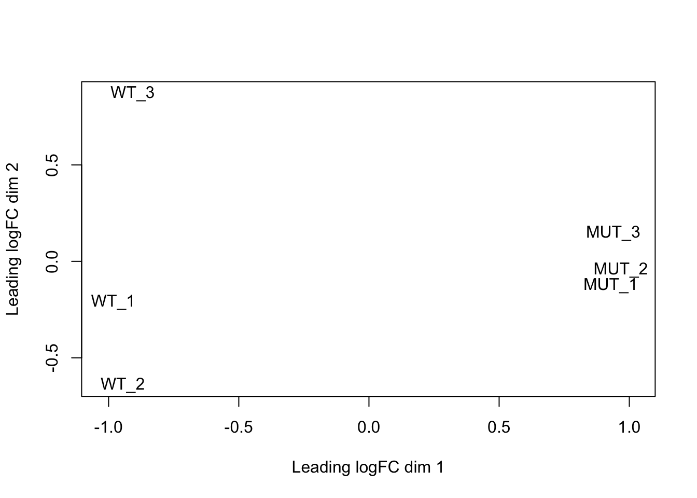
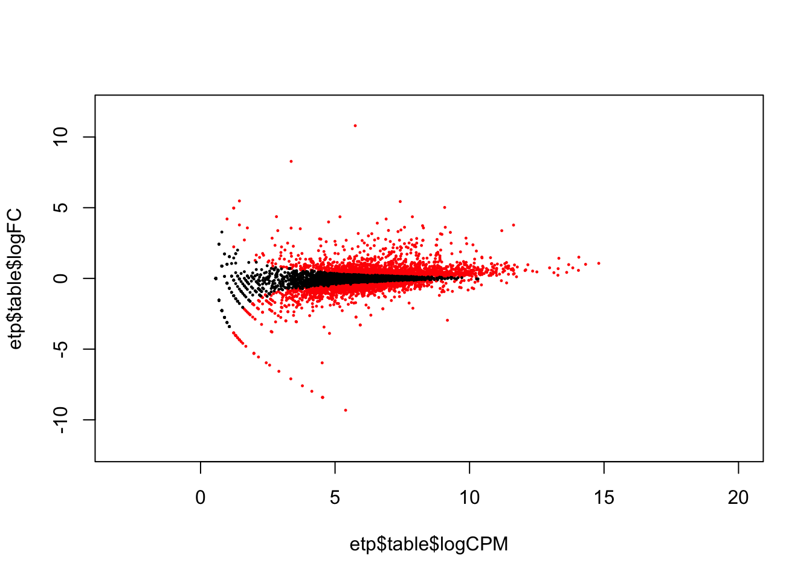
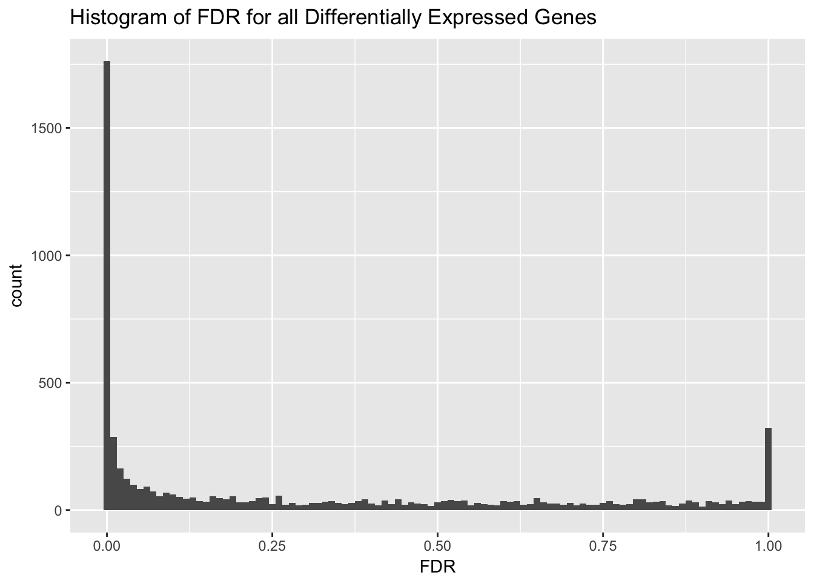
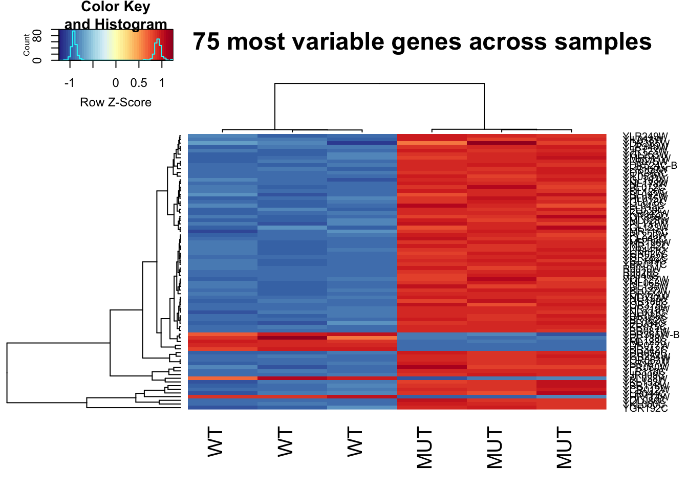
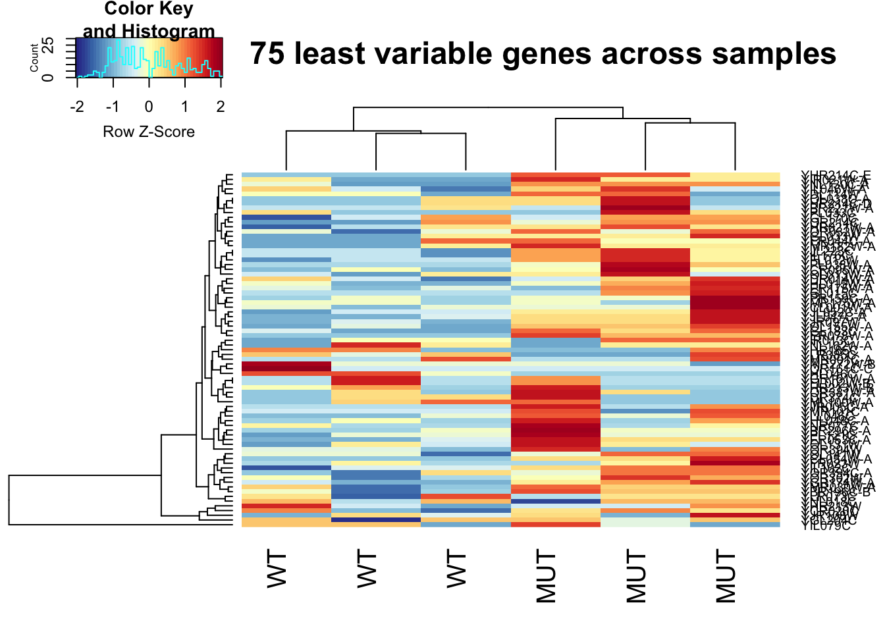

This tutorial was written using data from Schurch et al.[1], where WT and MUT yeast were compared to test the underlying distribution of RNA-seq data, and to test which differential expression programs work best. They had 672 samples, we’ll use 6 of them :)
Since our data appears to be of high quality, let’s perform differential expression with edgeR like we did before. We need to read in the proper count data, because edgeR expects raw counts, not counts that have been corrected in anyway. We will allow edgeR to perform correction for library size, and then estimate dispersion.
This will give us a DGE object. We can look at the DGE object and see some of the magic of edgeR.
head(dge$samples)## group lib.size norm.factors
## data/rnaseq/ERR458493.fastq.gz.quant wt 963028 0.8632726
## data/rnaseq/ERR458494.fastq.gz.quant wt 955258 0.8649983
## data/rnaseq/ERR458495.fastq.gz.quant wt 950704 0.8644693
## data/rnaseq/ERR458500.fastq.gz.quant mut 1620091 1.1574783
## data/rnaseq/ERR458501.fastq.gz.quant mut 1616974 1.1568370
## data/rnaseq/ERR458502.fastq.gz.quant mut 1611768 1.1569170head(dge$counts)## Samples
## Tags data/rnaseq/ERR458493.fastq.gz.quant
## YAL001C 61
## YAL002W 44
## YAL003W 1009
## YAL005C 1864
## YAL007C 86
## YAL008W 40
## Samples
## Tags data/rnaseq/ERR458494.fastq.gz.quant
## YAL001C 39
## YAL002W 40
## YAL003W 965
## YAL005C 1916
## YAL007C 93
## YAL008W 34
## Samples
## Tags data/rnaseq/ERR458495.fastq.gz.quant
## YAL001C 27
## YAL002W 32
## YAL003W 948
## YAL005C 1775
## YAL007C 77
## YAL008W 46
## Samples
## Tags data/rnaseq/ERR458500.fastq.gz.quant
## YAL001C 126
## YAL002W 106
## YAL003W 1103
## YAL005C 1481
## YAL007C 219
## YAL008W 87
## Samples
## Tags data/rnaseq/ERR458501.fastq.gz.quant
## YAL001C 129
## YAL002W 117
## YAL003W 1105
## YAL005C 1454
## YAL007C 198
## YAL008W 107
## Samples
## Tags data/rnaseq/ERR458502.fastq.gz.quant
## YAL001C 121
## YAL002W 96
## YAL003W 1033
## YAL005C 1489
## YAL007C 240
## YAL008W 116Lastly, we perform differential expression
Differential expression outputs a large file, which may leave you thinking…what next??
We can make an MDS plot to understand how our samples relate to one another. From the edgeR manual: “a multi-dimensional scaling plot of the RNA samples in which distances correspond to leading log-fold-changes between each pair of RNA samples. The leading log-fold-change is the average (root-mean-square) of the largest absolute log-foldchanges between each pair of samples. This plot can be viewed as a type of unsupervised clustering.” Our MUT samples cluster more closely to each other than to the WT samples. Does this agree with the sniff tests from pairwise comparisons we performed above?
plotMDS(dge, labels=labels)
We can also make an MA plot. From wikipedia: “an MA plot is an application of a Bland–Altman plot for visual representation of genomic data. The plot visualises the differences between measurements taken in two samples, by transforming the data onto M (log ratio) and A (mean average) scales, then plotting these values.”
etp$table$logFC = -etp$table$logFC # because our comparison is mut vs. wt, let's flip the tags for our plot
plot(etp$table$logCPM, etp$table$logFC, xlim=c(-3, 20), ylim=c(-12, 12), pch=20, cex=.3, col = ifelse( etp$table$FDR < .2, "red", "black" ) )
We can also make a histogram of the corrected p value (FDR). This shows that almost an equal number of differentially expressed and non-differentially expressed genes.
library(ggplot2)
ggplot(etp$table, aes(FDR)) + geom_histogram(binwidth = .01) + ggtitle("Histogram of FDR for all Differentially Expressed Genes")
Heatmaps are also a very popular way to visualize data. Let’s make a heat map of the 75 most variable genes!
# Load library for heatmap
library(gplots)
heatmap.2(highly_variable_norm_counts, col=rev(morecols(50)), trace="none",
main="Top 75 most variable genes across samples", scale="row",
labCol = c("WT", "WT", "WT", "MUT", "MUT", "MUT"))
Let’s do the same thing again, but this time we will plot the top 75 least variable genes. Even though we did cpm normalization, a lot of these genes are still very lowly expressed.
This is important to keep in mind when interpretting what this heatmap means.
# Load library for heatmap
library(gplots)
heatmap.2(not_variable_norm_counts, col=rev(morecols(50)), trace="none",
main="Top 75 least variable genes across samples", scale="row",
labCol = c("WT", "WT", "WT", "MUT", "MUT", "MUT"))
This lesson is adapted from the ANGUS: Analyzing High Throughput Sequencing Data Exploratory RNAseq data analysis using RMarkdown materials written by Taylor Reiter and Marian Schmidt.
1. Nicholas J. Schurch MG Pietá Schofield, Barton GJ. How many biological replicates are needed in an RNA-seq experiment and which differential expression tool should you use? RNA. 2016; 839–851. doi:10.1261/rna.053959.115